Boss（Veltharis）受擊與跪地
還沒接進遊戲。四個方向：朝下、朝右、朝上、朝左（朝左不是朝右的鏡像：劍在右手，朝左時在遠側）。跪姿照使用者的指定：右膝跪地（左腳在前、左膝立起）、劍插在地上、右手握著、頭向下看。劍上的火焰、失衡時火焰暗下、處決的刀光、死亡的灰燼都由程式畫，這裡沒有。
跪姿：四個方向
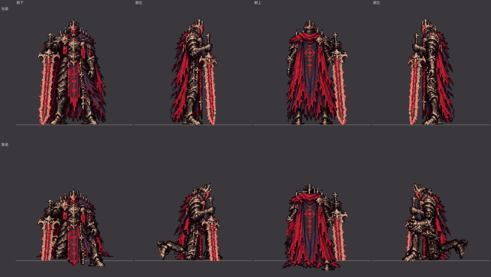
上排站姿、下排跪姿（3 倍）
遊戲裡會看到的順序
失衡（站著被削光韌性）：跪下、跪著喘氣到 3 秒、起身、站著
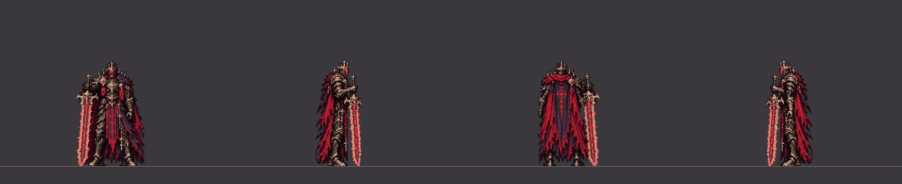
四個方向（2 倍）
朝下（60fps，3 倍）朝右（60fps，3 倍）朝上（60fps，3 倍）朝左（60fps，3 倍）失衡後在第 1.5 秒被處決：被處決 1 秒（0.2 秒時刺中）、起身
四個方向（2 倍）
朝下（60fps，3 倍）朝右（60fps，3 倍）朝上（60fps，3 倍）朝左（60fps，3 倍）往前走時失衡（從循環第 10 張）：劍從肩上繞到身前插進地面、跪下、喘氣、起身
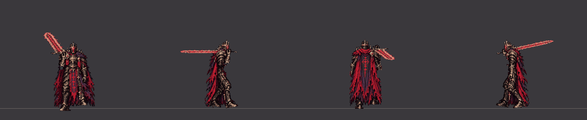
四個方向（2 倍）
朝下（60fps，3 倍）朝右（60fps，3 倍）朝上（60fps，3 倍）朝左（60fps，3 倍）短僵直：站著被打中 → 站著；往前走時被打中（循環第 10 張）→ 接著走
四個方向（2 倍）
朝下（60fps，3 倍）朝右（60fps，3 倍）朝上（60fps，3 倍）朝左（60fps，3 倍）被彈開：重擊（1.2 秒）→ 扛劍站著 → 喘息時的側移；輕擊（0.8 秒）同一組圖播快
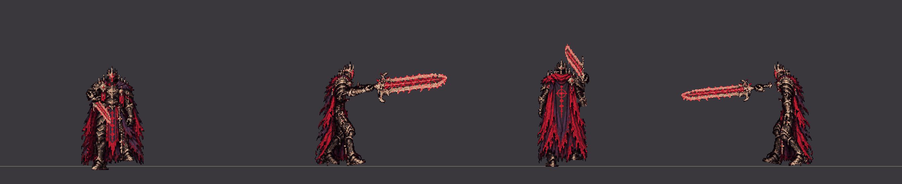
四個方向（2 倍）
朝下（60fps，3 倍）朝右（60fps，3 倍）朝上（60fps，3 倍）朝左（60fps，3 倍）階段轉場（1.5 秒）：站著 → 單膝跪地 → 披風翻飛 → 起身；處決後直接轉場（從跪姿開始）
四個方向（2 倍）
朝下（60fps，3 倍）朝右（60fps，3 倍）朝上（60fps，3 倍）朝左（60fps，3 倍）死亡：跪下、往前垂、停住（灰燼消散由程式畫）
四個方向（2 倍）
朝下（60fps，3 倍）朝右（60fps，3 倍）朝上（60fps，3 倍）朝左（60fps，3 倍）
握劍的手（放大 4 倍）
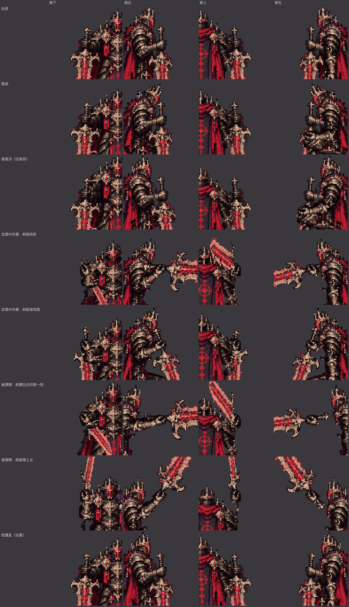
由上到下：站姿、跪姿、被處決往後仰、走路中失衡（劍插地前、插進地面）、被彈開（揮出去、被彈上去）、短僵直
側面的腿（只畫腿，綠線＝靠鏡頭的右腿，藍線＝另一條）
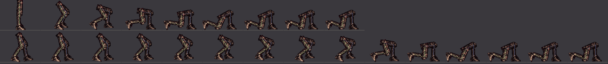
上排：站著跪下；下排：往前走時跪下
逐張
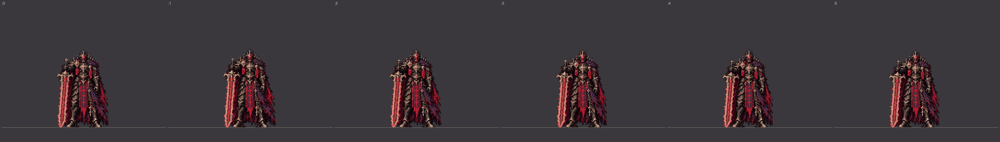
boss_stagger 朝下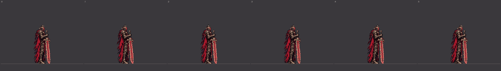
boss_stagger 朝右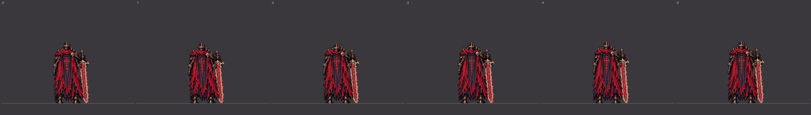
boss_stagger 朝上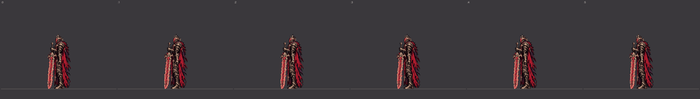
boss_stagger 朝左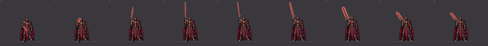
boss_bounce 朝下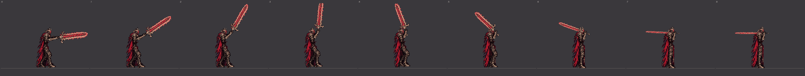
boss_bounce 朝右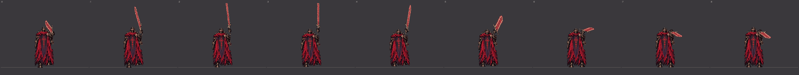
boss_bounce 朝上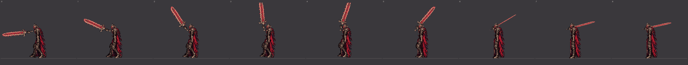
boss_bounce 朝左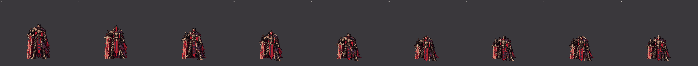
boss_kneel_down 朝下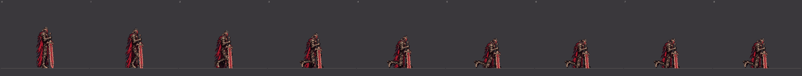
boss_kneel_down 朝右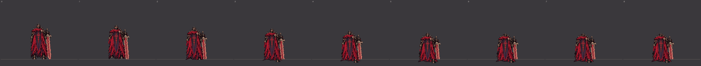
boss_kneel_down 朝上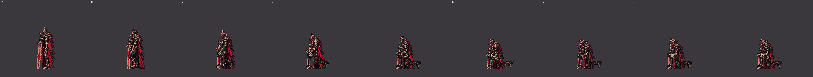
boss_kneel_down 朝左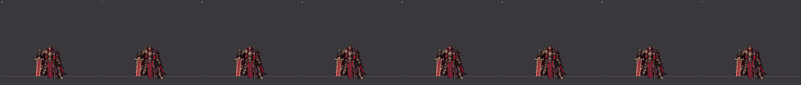
boss_kneel_breathe 朝下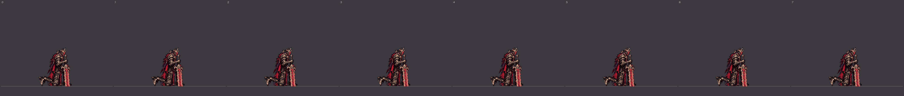
boss_kneel_breathe 朝右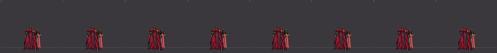
boss_kneel_breathe 朝上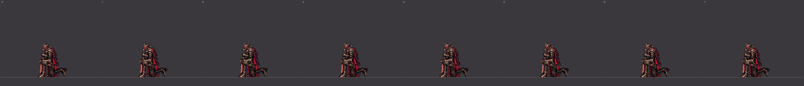
boss_kneel_breathe 朝左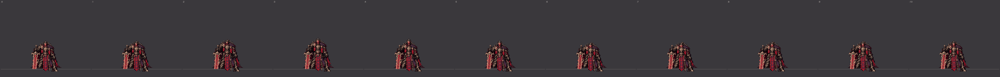
boss_executed 朝下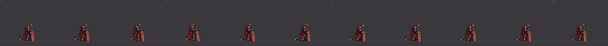
boss_executed 朝右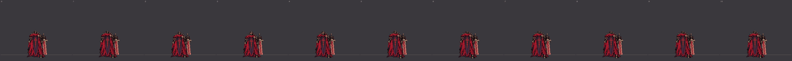
boss_executed 朝上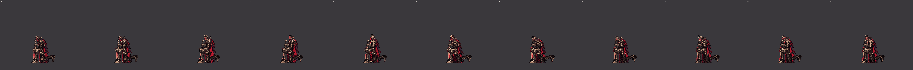
boss_executed 朝左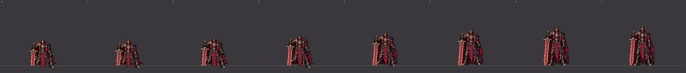
boss_rise 朝下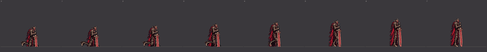
boss_rise 朝右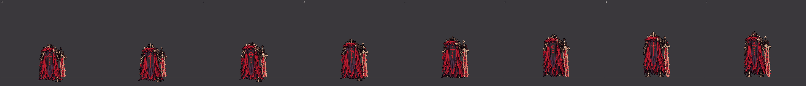
boss_rise 朝上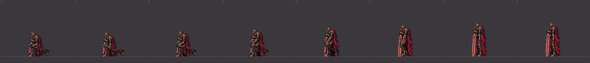
boss_rise 朝左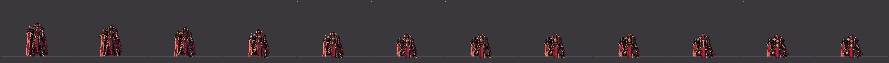
boss_death 朝下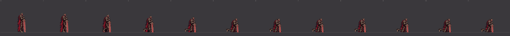
boss_death 朝右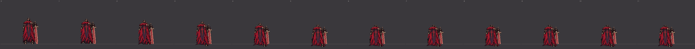
boss_death 朝上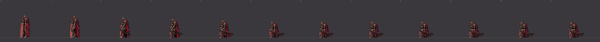
boss_death 朝左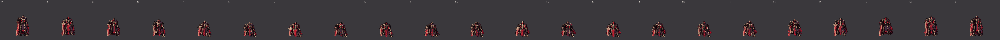
boss_transition 朝下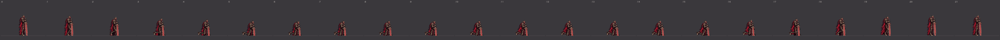
boss_transition 朝右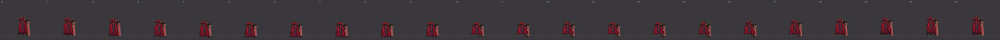
boss_transition 朝上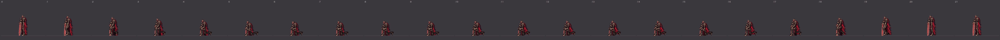
boss_transition 朝左boss_transition_kneel 朝下boss_transition_kneel 朝右boss_transition_kneel 朝上boss_transition_kneel 朝左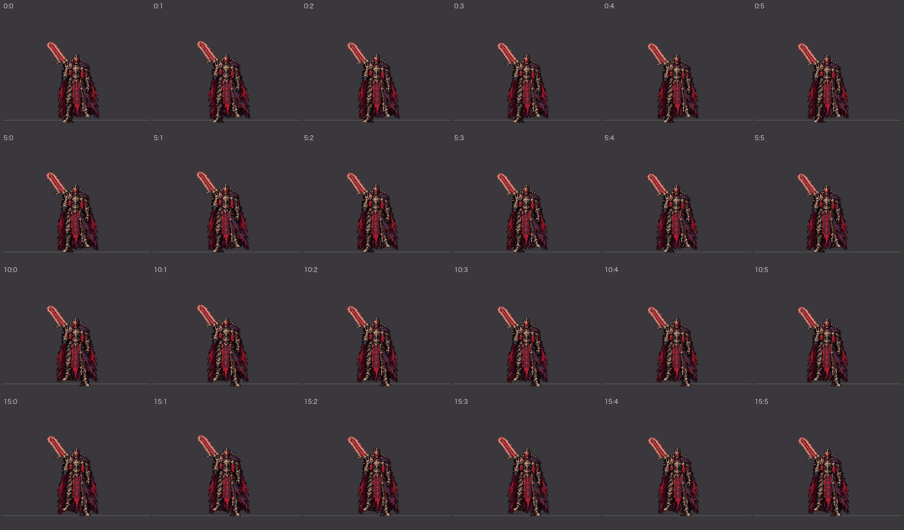
boss_walk_stagger 朝下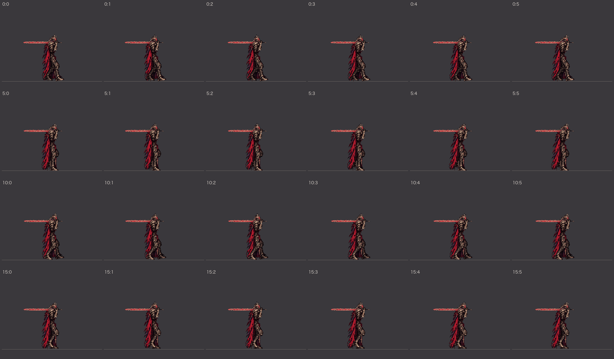
boss_walk_stagger 朝右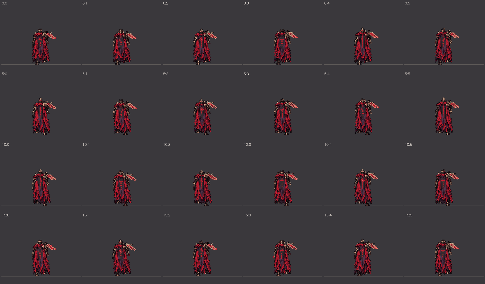
boss_walk_stagger 朝上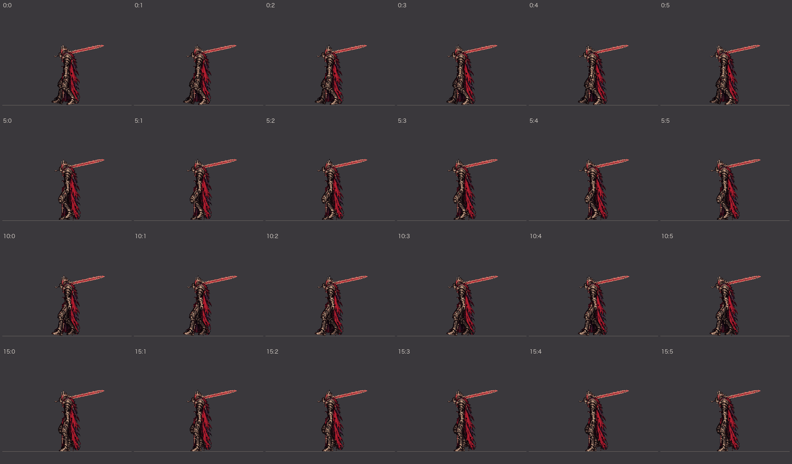
boss_walk_stagger 朝左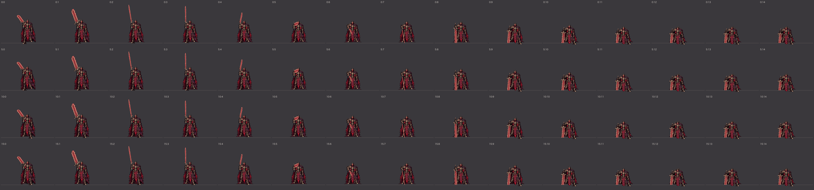
boss_walk_kneel 朝下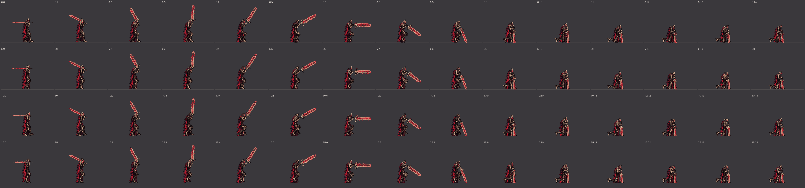
boss_walk_kneel 朝右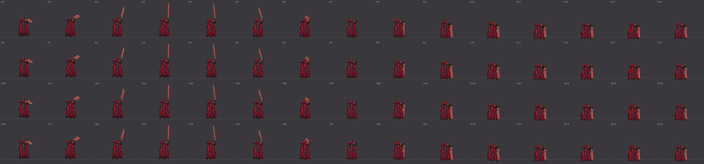
boss_walk_kneel 朝上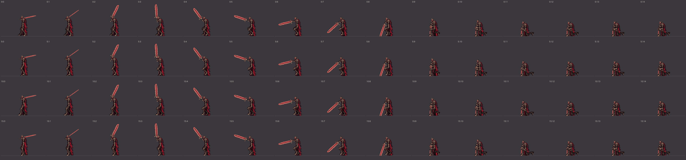
boss_walk_kneel 朝左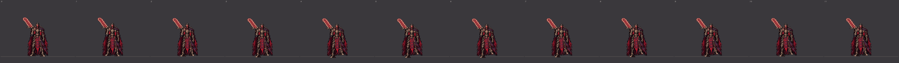
boss_walk_cstart 朝下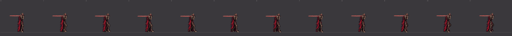
boss_walk_cstart 朝右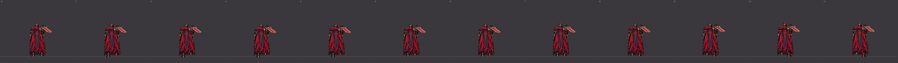
boss_walk_cstart 朝上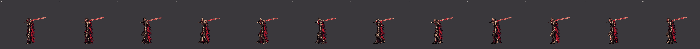
boss_walk_cstart 朝左boss_walk_back_stagger 朝下boss_walk_back_stagger 朝右boss_walk_back_stagger 朝上boss_walk_back_stagger 朝左boss_walk_back_kneel 朝下boss_walk_back_kneel 朝右boss_walk_back_kneel 朝上boss_walk_back_kneel 朝左boss_walk_back_cstart 朝下boss_walk_back_cstart 朝右boss_walk_back_cstart 朝上boss_walk_back_cstart 朝左boss_strafe_r_stagger 朝下boss_strafe_r_stagger 朝右boss_strafe_r_stagger 朝上boss_strafe_r_stagger 朝左boss_strafe_r_kneel 朝下boss_strafe_r_kneel 朝右boss_strafe_r_kneel 朝上boss_strafe_r_kneel 朝左boss_strafe_r_cstart 朝下boss_strafe_r_cstart 朝右boss_strafe_r_cstart 朝上boss_strafe_r_cstart 朝左boss_strafe_l_stagger 朝下boss_strafe_l_stagger 朝右boss_strafe_l_stagger 朝上boss_strafe_l_stagger 朝左boss_strafe_l_kneel 朝下boss_strafe_l_kneel 朝右boss_strafe_l_kneel 朝上boss_strafe_l_kneel 朝左boss_strafe_l_cstart 朝下boss_strafe_l_cstart 朝右boss_strafe_l_cstart 朝上boss_strafe_l_cstart 朝左